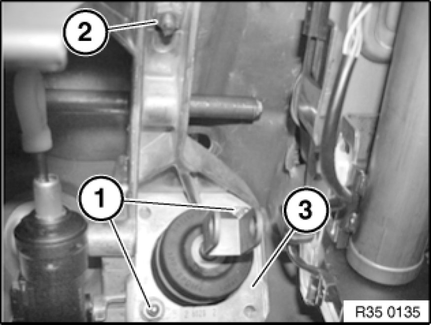

Removing and Installing (Replacing) Complete Bearing Block for Foot Pedal
35 11 000 - Removing and installing (replacing) complete bearing block for foot pedal

Necessary preliminary tasks:
- Remove brake pedal Removing and Installing/Replacing Brake Pedal
- Remove clutch pedal Removing and Installing/Replacing Clutch Pedal
- Remove clutch master cylinder from bearing block

Unscrew nuts (1).
Release nut (2) and remove bearing block (3).
Installation:
Tighten nuts (1) in front of nut (2).
Tightening torque 35 11 1AZ 35 11 Pedal Assembly Console.